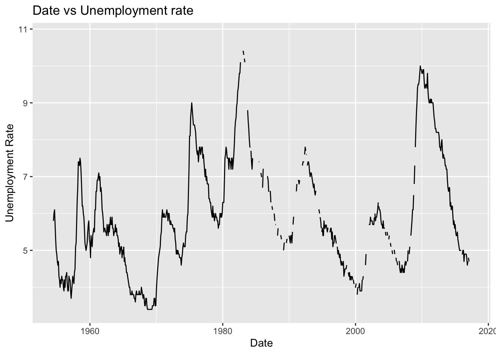
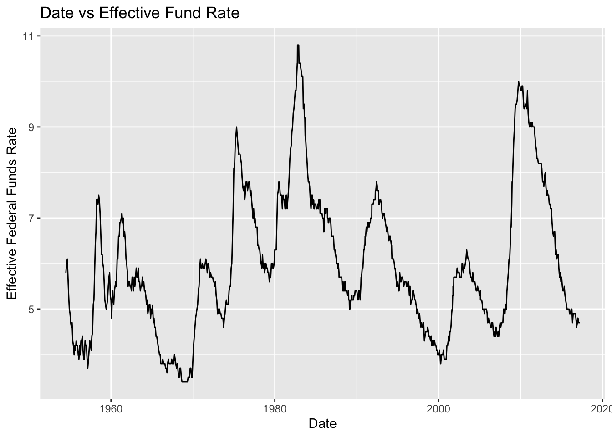
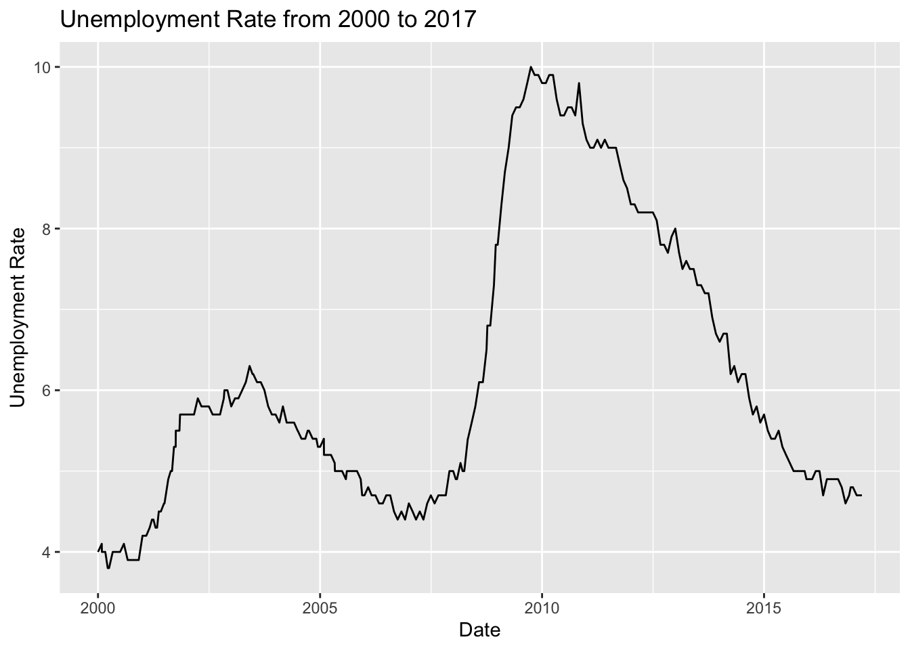

library(tidyverse)
library(ggplot2)
knitr::opts_chunk$set(echo = TRUE, warning=FALSE, message=FALSE)Challenge 6 Paritosh
challenge_6
hotel_bookings
air_bnb
fed_rate
debt
usa_households
abc_poll
Visualizing Time and Relationships
Challenge Overview
Today’s challenge is to:
- read in a data set, and describe the data set using both words and any supporting information (e.g., tables, etc)
- tidy data (as needed, including sanity checks)
- mutate variables as needed (including sanity checks)
- create at least one graph including time (evolution)
- try to make them “publication” ready (optional)
- Explain why you choose the specific graph type
- Create at least one graph depicting part-whole or flow relationships
- try to make them “publication” ready (optional)
- Explain why you choose the specific graph type
R Graph Gallery is a good starting point for thinking about what information is conveyed in standard graph types, and includes example R code.
(be sure to only include the category tags for the data you use!)
Read in data
Read in one (or more) of the following datasets, using the correct R package and command.
- debt ⭐
- fed_rate ⭐⭐
- abc_poll ⭐⭐⭐
- usa_hh ⭐⭐⭐
- hotel_bookings ⭐⭐⭐⭐
- AB_NYC ⭐⭐⭐⭐⭐
fedr <- read_csv("_data/FedFundsRate.csv")Briefly describe the data
summary(fedr) Year Month Day Federal Funds Target Rate
Min. :1954 Min. : 1.000 Min. : 1.000 Min. : 1.000
1st Qu.:1973 1st Qu.: 4.000 1st Qu.: 1.000 1st Qu.: 3.750
Median :1988 Median : 7.000 Median : 1.000 Median : 5.500
Mean :1987 Mean : 6.598 Mean : 3.598 Mean : 5.658
3rd Qu.:2001 3rd Qu.:10.000 3rd Qu.: 1.000 3rd Qu.: 7.750
Max. :2017 Max. :12.000 Max. :31.000 Max. :11.500
NA's :442
Federal Funds Upper Target Federal Funds Lower Target
Min. :0.2500 Min. :0.0000
1st Qu.:0.2500 1st Qu.:0.0000
Median :0.2500 Median :0.0000
Mean :0.3083 Mean :0.0583
3rd Qu.:0.2500 3rd Qu.:0.0000
Max. :1.0000 Max. :0.7500
NA's :801 NA's :801
Effective Federal Funds Rate Real GDP (Percent Change) Unemployment Rate
Min. : 0.070 Min. :-10.000 Min. : 3.400
1st Qu.: 2.428 1st Qu.: 1.400 1st Qu.: 4.900
Median : 4.700 Median : 3.100 Median : 5.700
Mean : 4.911 Mean : 3.138 Mean : 5.979
3rd Qu.: 6.580 3rd Qu.: 4.875 3rd Qu.: 7.000
Max. :19.100 Max. : 16.500 Max. :10.800
NA's :152 NA's :654 NA's :152
Inflation Rate
Min. : 0.600
1st Qu.: 2.000
Median : 2.800
Mean : 3.733
3rd Qu.: 4.700
Max. :13.600
NA's :194 Tidying the Data
fedr$Date <- as.Date(with(fedr,paste(Day,Month,Year,sep="-")),"%d-%m-%Y")
fedr# A tibble: 904 × 11
Year Month Day Federal F…¹ Feder…² Feder…³ Effec…⁴ Real …⁵ Unemp…⁶ Infla…⁷
<dbl> <dbl> <dbl> <dbl> <dbl> <dbl> <dbl> <dbl> <dbl> <dbl>
1 1954 7 1 NA NA NA 0.8 4.6 5.8 NA
2 1954 8 1 NA NA NA 1.22 NA 6 NA
3 1954 9 1 NA NA NA 1.06 NA 6.1 NA
4 1954 10 1 NA NA NA 0.85 8 5.7 NA
5 1954 11 1 NA NA NA 0.83 NA 5.3 NA
6 1954 12 1 NA NA NA 1.28 NA 5 NA
7 1955 1 1 NA NA NA 1.39 11.9 4.9 NA
8 1955 2 1 NA NA NA 1.29 NA 4.7 NA
9 1955 3 1 NA NA NA 1.35 NA 4.6 NA
10 1955 4 1 NA NA NA 1.43 6.7 4.7 NA
# … with 894 more rows, 1 more variable: Date <date>, and abbreviated variable
# names ¹`Federal Funds Target Rate`, ²`Federal Funds Upper Target`,
# ³`Federal Funds Lower Target`, ⁴`Effective Federal Funds Rate`,
# ⁵`Real GDP (Percent Change)`, ⁶`Unemployment Rate`, ⁷`Inflation Rate`Time Dependent Visualization
fedr %>%
ggplot(aes(x = Date, y = `Unemployment Rate`)) +
geom_line() +
labs( x = "Date", y = "Unemployment Rate", title = "Date vs Unemployment rate")
data_fill <- fedr %>%
fill(`Unemployment Rate`, .direction = 'updown')
ggplot(data_fill, aes(x = Date, y = `Unemployment Rate`)) +
geom_line() +
labs(x = "Date", y = "Effective Federal Funds Rate", title = "Date vs Effective Fund Rate" )
Visualizing Part-Whole Relationships
data_fill <- fedr %>%
fill(`Unemployment Rate`, .direction = 'updown')
data_fill %>%
filter(Year > 1999) %>%
ggplot(aes(x = Date, y = `Unemployment Rate`)) +
geom_line() +
labs( x = "Date", y = "Unemployment Rate", title = "Unemployment Rate from 2000 to 2017")